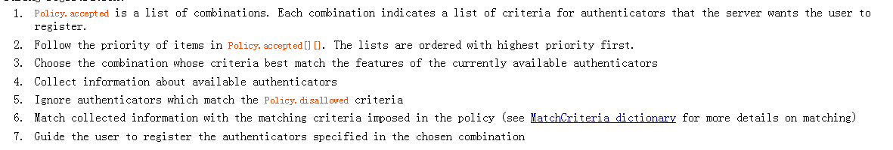
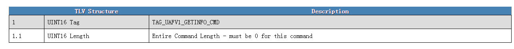
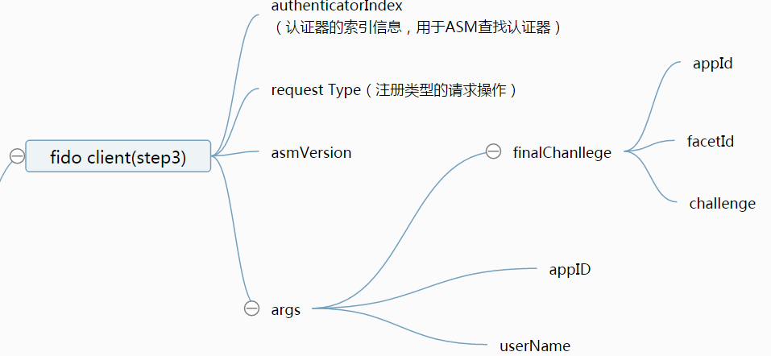
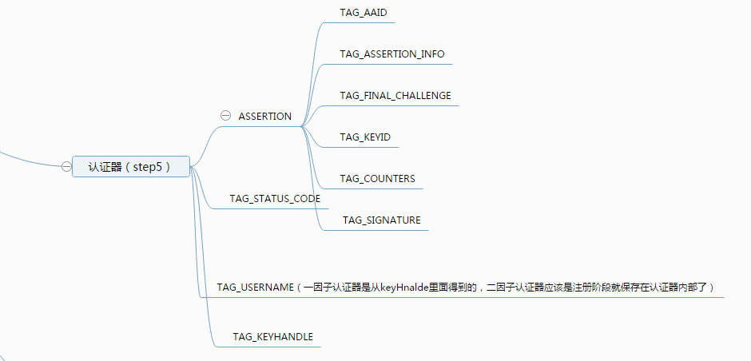

fido 操作流程阐述
-
- GetInfo操作的目的
-
GetInfo操作具体步骤程以及数据演变
-
- Register操作的目的
-
Register操作具体流程以及数据演变
-
- Authenticate操作的目的
-
Authenticate操作具体流程以及数据演变
1.GetInfo操作
1.1 GetInfo操作的目的
GetInfo操作的目的是为了获取认证器的详细信息，为什么要获取认证器的详细信息呢？因为一个设备上，可能集成了很多个认证器（比如指纹认证器，声音认证器，虹膜认证器等），这时候，用户一次只能使用一种认证器来进行fido认证，那么，FidoClient需要根据服务器的policy来决定使用哪种认证器，继而在之后数据传递操作中，告诉ASM选择哪种认证器做后续的操作流程。
Fido Client: FidoClient每次在收到fidoServer的Request的信息之后，都会解析policy字段，具体操作流程如下所示：我们可以看到，Fido Client会根据服务器的policy和获取本地认证器的信息来进行后续的步骤
1.2 GetInfo操作具体步骤程以及数据演变的
Fido Client:
首先FidoClient收到服务器的消息后，向 ASM发出获取Info的请求，这个请求体的格式为：
-
ASM:
ASM收到请求消息后，做如下操作：
- 1.首先列举出在该设备上且ASM支持的认证器
- 2.向所有的认证器发送GetInfo指令
- 向ASM发送信息的结构截图所示：
认证器:
认证器收到GetInfo的请求后，生成GetInfo返回体，然后把认证器的详细信息返回给ASMASM:
ASM收到信息后，基本不做过多处理，简单组织信息后，直接返回给FidoClient,返回的信息体如下
Fido Client:
Fido Client收到信息之后，会将服务器的policy中的信息和认证器信息进行匹配，找到匹配成功的认证器后，将authenticatorIndex加入请求ASM的消息体中。
2.Register操作
2.1 Register操作
注册操作主要是为用户的认证操作做准备。在注册操作中，认证器会生成之后认证过程最关键的公私钥对，KeyHandle，KeyId等重要数据，为之后的认证过程能够认证用户身份做数据铺垫。
2.2 Register操作具体流程以及数据演变
1. 1.Fido Client:
fidoClient首先会发送如下图的信息给Fido Server： 2.
2. 2.Fido Server
Fido Sever收到请求后，组织如下数据信息，发送给Fido Client（注：由于本篇文档是主要阐述关于客户端的，因此，服务器如何组织信息，客户端这里不做解释） 我们可以看到，服务器的信息包含：header[upv,severData,op],policy[accpted,disallow],AppId,challenge的信息.
3.
我们可以看到，服务器的信息包含：header[upv,severData,op],policy[accpted,disallow],AppId,challenge的信息.
3. 3.Fido Client
FidoClient 收到第2步的信息后，做如下操作:
- 1.用json解析upv中的major version和minor versionn是否1，0；
- 2.用json解析服务器发送的全部信息
-
3.根据消息中的policy字段来筛选符合的认证器：具体的筛选步骤如下：
- 解析policy里面的信息（policy里面的信息都是FidoServer认可的，用户可以注册的认证器）
- 根据最近较常使用的认证器来选择policy信息里面的组合
- 搜集所有可用的认证器信息
- 排除policy.disallowed的信息
- 找到匹配policy.accepted中包含的认证器
- 引导用户使用匹配成功的认证器（让用户选择匹配成功的认证器）
-
4.根据AppID来获取FacetId，具体的操作如下：
- 5.形成FinalCallengeParams的内容，FinalCallengeParams就是appID 和challenge,facetIdf的json字符串的信息(Base64b编码形成的)
- 6.形成下图所示的信息，发送请求信息，发送给ASM：我们可以看到，包含的信息包括（认证器索引信息，操作类型，ASM版本号，请求参数[finalChallege,appID,userName]）
4.ASM
ASM收到请求的信息体后，做如下的操作：
- 根据authenticatorIndex找到对应的认证器，如果索引值没有找到对应的认证器，则返回错误的状态码
-
如果认证器中已经有用户的身份特征信息了，则要求要求认证器验证用户的身份，并且生成UserVerificationToken字段（如果认证器支持这个字段的话）；如果认证器验证用户身份失败，则返回拒绝的状态代码。
-
如果认证器中并未含有用户的身份特征信息，则要求认证器现在录入用户身份特征信息
-
生成KeyHandleAccessToken的数值
- 1.KeyAccessToken=AppID
- 2.如果为绑定类的认证器则：KHAccessToken |= ASMToken | PersonaID | CallerID(注：其中，ASMToken是ASM的一个特征数值，PersonID是操作系统用户名，CallerID是调用FidoClient的APP的包名)
- 3.计算KHAccessToken的hash数值，摘要算法是认证器内部的摘要算法:KHAccessToken=hash(KHAccessToken)
- 计算FinalChanllege的摘要数值（hash算法应该用认证器自己的hash算法）
- 生成如下图信息（TLV格式）发送给认证器：
 可以看到上图的信息包括（认证器索引值，APPID，挑战的摘要值，注册的用户名，认证器的认证方式，KHAceesToken）
可以看到上图的信息包括（认证器索引值，APPID，挑战的摘要值，注册的用户名，认证器的认证方式，KHAceesToken）
5.认证器
认证器收到ASM的请求体之后，做如下操作：
-
如果APPID的字段不为空，则再次更新KeyAceessToken的数值 KHAccessToken=hash(KHAccessToken | Command.TAG_APPID)
-
如果认证器中已经含有了用户的身份特征信息（比如用户的指纹，声音等类型的信息），验证用户的身份的合法性。如果TAGUSERVERIFYTOKEN字段不为空，则验证TAGUSERVERIFYTOKEN字段的合法性；如果认证失败，则返回拒绝的响应状态码。
- 如果认证器中没有没用用户的信息，则当场让认证器记录用户的身份特征信息，如果用户取消记录，则返回取消的状态码，如果记录失败，则返回拒绝的状态代码。
- 确保TAGATTESTATIONTYPE 是认证器支持的类型，否则返回不支持的响应的代码
- 以上操作都没有问题之后，产生一个密钥对(公私钥)
-
生成RawKeyHandle:
- .将私钥加入RawKeyHandle对象
- .将TAGKEYHANDLEACCESS_TOKEN 加入RawKeyHandle对象
- .如果是第一类认证器，KeyHandle还要加入用户名字
- 对RawKeyHandle进行加密(加密方式由认证器决定）(AES加密算法)
- 形成KRD的内容：（以TLV的形式）KRD的内容如下图所示：
 KRD[AAID,ASSERTIONINFO,FINALCHALLENGE,KEY_ID,COUNTERS,PUBLIC KEY]（注：如果是二因子非绑定类型的认证器，则用KeyHandle代替KeyId）
KRD[AAID,ASSERTIONINFO,FINALCHALLENGE,KEY_ID,COUNTERS,PUBLIC KEY]（注：如果是二因子非绑定类型的认证器，则用KeyHandle代替KeyId）
- 按照协议规范组织KRD的内容
-
生成签名证书TAGAUTHENTICATORASSERTION的内容：
- 生成KRD的摘要信息，并且用私钥对KRD进行签名。
- 如果是第一类认证器，则会把keyHandle发给ASM保存，如果是二因子的认证器，则要直接把username和keyHanlde保存在认证器内部
- 加入X509的证书信息
- 按照TLV的形式组织TAGAUTHENTICATORASSERTION的内容
- 将KRD和TAGAUTHkeENTICATORASSERTION按照TLV的形式返回给ASM，数据信息如下：

6.ASM
ASM收到认证返回的信息之后，做如下操作：
- 解析TAGAUTHENTICATORASSERTION消息体，提取出KEY_ID的的数值
- 如果认证器是绑定类型的认证器，则将CallerID,AppID,TAGKEYHANDLE,TAGKEYID,当前系统时间存入ASM的数据库中。
- 构造向FidoClient向上传递的信息体，如下图所示

7.Fido Client
Fido Client收到ASM的返回的消息体之后，做如下处理：
构造向FidoServer返回的消息体
- 构造头部信息：就是服务器一开始发过来的头部信息header[upv,severData,op]
- 从ASM返回的消息体中，提取出FINAL_CHALLENGE的信息，然后加入fcParams 中
- 将ASM返回的消息体中的ASSERTION加入RegisterOut的内容中
- 形成如下图所示的消息体：

- 将消息体发送给Fido Server
8.Fido Sever
FidoSever做后续处理，比如存储KeyID，验证签名是否正确等等
3.Authenticate操作
3.1 Authenticate操作的目的
认证操作的主要目的是在注册操作已经完成
3.2 Authenticate操作具体流程以及数据演变
认证过程中每一步的操作以及每一层做的具体的事情如下所示
1.Fido Client
Fido Client向服务器发送验证的请求，请求内容包含userName。
2.Fido Server
Fido Server组织信息如下图所示（由于本文档主要面向客户端，因此server如何组织的信息，这里略去）
 可以看到，fidosever发送的信息中，含有header[upv,severData,op],challenge,policy[accpeted[keyid,aaid],disallow],其中，keyID和AAID是在注册过程认证器留在服务器上的信息（注：keyID和AAID的组合一定是唯一的）
可以看到，fidosever发送的信息中，含有header[upv,severData,op],challenge,policy[accpeted[keyid,aaid],disallow],其中，keyID和AAID是在注册过程认证器留在服务器上的信息（注：keyID和AAID的组合一定是唯一的）
3.Fido Client
FidoClient收到FidoServer的消息后，作如下操作：
4.ASM
ASM收到信息后，做如下的操作：
- 根据authenticatorIndex找到对应的认证器
- 如果认证器中没有用户的身份特征信息，则返回拒绝的响应状态码
-
ASM要求认证器去检验用户的身份，如果用户的身份检验失败，则返回被拒绝的响应字段
- 如果认证器支持UserVerificationToken这个字段，则将UserVerificationToken这个字段也发给认证器
- 生成KeyHandleAcessToken的数值，这个计算的方式和注册的时候的一样的（KeyHandleAcessToken主要用于认证器去信任ASM）
- 用认证器的自己的hash算法计算finalChallegne的摘要
- 如果是二因子的认证器，发现KeyIDs为空，则返回拒绝的响应字段
-
如果keyIDs不为空（KeyID就是用来寻找KeyHandle的）
- 如果为绑定类型的认证器，则通过AppId，KeyId在ASM的数据库中去查找对应的KeyHandle
- 如果为非绑定类型的认证器，则将keyID放入KeyHandle的字段中去（远程认证器是在注册时候将keyHanlde存储在内部的）
8.形成如下的信息格式发送给验证器
5.认证器
认证器收到请求后，做如下的操作：
- 更新KeyAcessToken的数值（计算方法和注册过程是一样的）
-
如果认证器中有用户的身份特征信息（比如指纹，虹膜等）则验证用户的身份是否正确，并且验证UserVerificationToken字段是否有效
- 如果验证失败，则返回拒绝的状态码
- 如果用户有取消操作的动作，如果有，则返回取消操作的状态码
- 如果用户没有注册，则返回没有注册的验证信息
- 用验证器的内部的加密算法（AES算法）解密KeyHandle的数值
- 用KeyAcessToken的数值来过滤第4步找到的所有的KeyHandle，比较两者的摘要是否一致。RawKeyHandle.KHAccessToken == Command.KHAccessToken主要用于认证器信任消息确实为ASM所发
- 经过过滤之后，如果KeyHandle的个数为零，则返回拒绝验证的状态码
-
如果剩下的KeyHandle的个数的大于1
- 如果为二因子的认证器，则直接挑选第一个keyHnadle然后进入第8步骤
- 形成{Command.KeyHandle, RawKeyHandle.username}的这样一对对的元组信息，放入TAGUSERNAMEAND_KEYHANDLEs字段中，然后返回给ASM
-
如果剩下的KeyHandle的等于1：
-
构造ASSERTION的信息
- 形成证书信息（证书信息包括：AAID，CHALLENGE,COUNTERS[引用计数器]等）
- 用私钥签名证书的信息
- 形成如下图所示的信息体，然后返回ASM
6.ASM
ASM收到认证器返回的消息之后，做如下的操作
-
1.如果是一因子的认证器，而且 TAGUSERNAMEAND_KEYHANDLE字段不为空的话：
- 1.从字段中提取出所有的{Command.KeyHandle, RawKeyHandle.username}元组对
- 2.找到所有元组中是否相同username，如果多个相同，则根据注册阶段在ASM的数据库中的注册时间，挑选一个注册时间最近的username做处理，剩下的username都排除
- 3.如果剩下的元组的个数都还是大于1，则让用户选择一个username，从而找到一个对应的keyHandle
- 4.用户选择完成之后，重复4.ASM的步骤中的第8步再次请求ASM
- 2.如果上述条件不满足，则形成如下图所示数据，向FidoClient传递

7.FidoClient
FidoClient收到ASM返回的数据后，做如下操作：
- 形成Header的信息(Header信息就是fidosever开始请求的header的信息)
- 形成将FinalChallenge的信息加入返回消息体中
- 将ASM的信息也加入返回的消息中
- 形成如下图所示的消息体:

- 发送给fidoserver
8.FidoServer
FidoSever收到消息后，做签名计数器验证，挑战的签名验证等一系列的工作